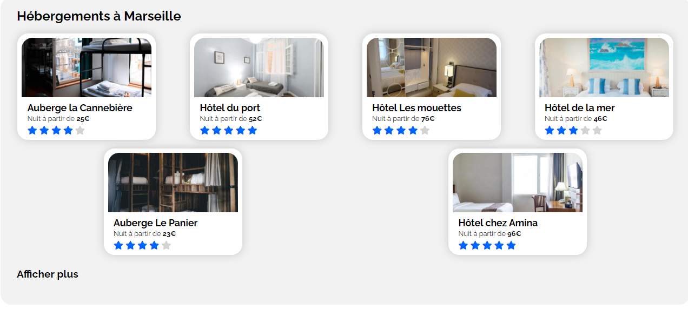
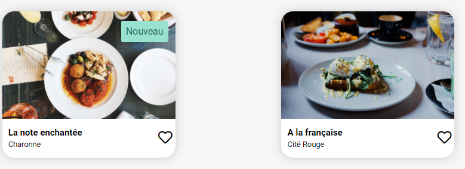
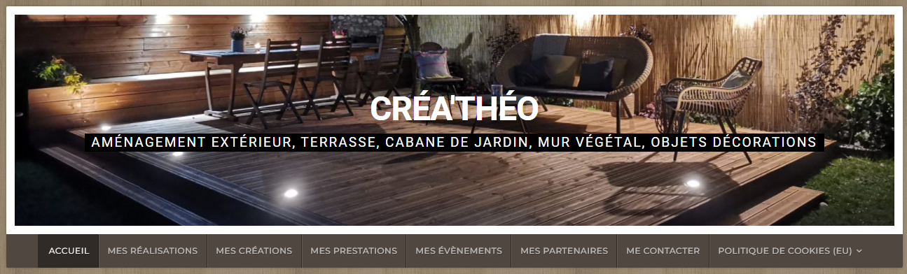

Suite à une reconversion professionnelle après 20 ans passés dans la logistique en tant que responsable, j'ai suivi une formation chez OpenClassrooms pour devenir Développeur web. Depuis plus de 6 mois je me suis lancé et j'ai créé mon entreprise en freelance FPK WEB DEVELOPPEMENT. Dans les projets ci-dessous vous avez accès au site internet pour vous donner une idée de mon travail. Les trois premiers sont des projets que je devais réaliser en autonomie et suite à un schéma bien précis au cours de ma formation. Pour les deux suivants, le premier est un site vitrine d'une boutique de cordonnerie située à Gagny en Seine-Saint-Denis, le deuxième est un site internet pour montrer le travail d'un jeune étudiant à l'école supérieure d'architecture. Les projets en cours sont un site pour une location meublée, avec la synchronisation des calendriers AirBnb, Booking, etc... Un site internet pour un club de triathlon. Un site internet pour suivre tous les résultats sportifs, le calendrier des matchs, les classements des clubs d'une ville.
Projets réalisés
Transformez une maquette en site web (avec OpenClassrooms)

Le scénario de ce projet était que suite à un stage en tant que développeur web dans une société qui propose un outil de planification de vacances. Le site permet aux usagers de trouver des hébergements et des activités dans la ville de leur choix.Les hébergements peuvent également être filtrés par thématique, par exemple leur budget ou leur ambiance. Il fallait donc intégrer du contenu conformément à une maquette et implémenter une interface responsive.
Ressources utilisées (HTML, CSS)
Dynamisez une page web avec des animations CSS (avec OpenClassrooms)

Pour ce projet, je viens d'être recruté en tant que développeur junior dans une jeune startup. L'objectif est de développer un site 100% mobile qui répertorie les menus de restaurants gastronomiques. En plus des systèmes classiques de réservations, les clients pourront composer le menu de leur repas pour que les plats soient prêts à leur arrivée. Il fallait mettre en place une structure de navigation pour un site web et son environnement Front-End. Utiliser un système de gestion de versions pour le suivi du projet et son hébergement. Mettre en oeuvre des effets CSS graphiques avancés et assurer la cohérence graphique du site.
Ressources utilisées (HTML, CSS, SASS, GIT, GITHUB)
Optimisez un site web existant (avec OpenClassrooms)

Je travaille pour une agence de web design basée à Lyon, et je suis spécialiste en référencement je dois améliorer le SEO du site pour remonter en première page des moteurs de recherche. Réaliser une recherche des bonnes pratiques en développement web. Optimiser le référencement, la taille et la vitesse d'un site web. Assurer l'accessibilité d'un site web. Écrire un code HTML et CSS maintenable.
Ressources utilisées (HTML, CSS, SEO, GIT, GITHUB)

Réalisation d'un site vitrine pour une cordonnerie (pour un client)

Création d'un site vitrine WordPress pour une cordonnerie à Gagny. Le site est sur une page avec toutes les informations nécessaires sur les prestations, les services ainsi que les horaires d'ouverture.
Ressources utilisées (WordPress, Elementor)

Réalisation d'un site internet pour un jeune étudiant à l'école supérieur d'architecture et de paysage à Genève
Création d'un site vitrine avec toutes les créations, les prestations, les photos et les réalisations. Des vidéos Youtube sur les différents chantiers réalisés. Une page de contact, et un lien pour le suivre sur instagram.
Ressources utilisées (Wordpress, Elementor)

À bientôt je l'espère !